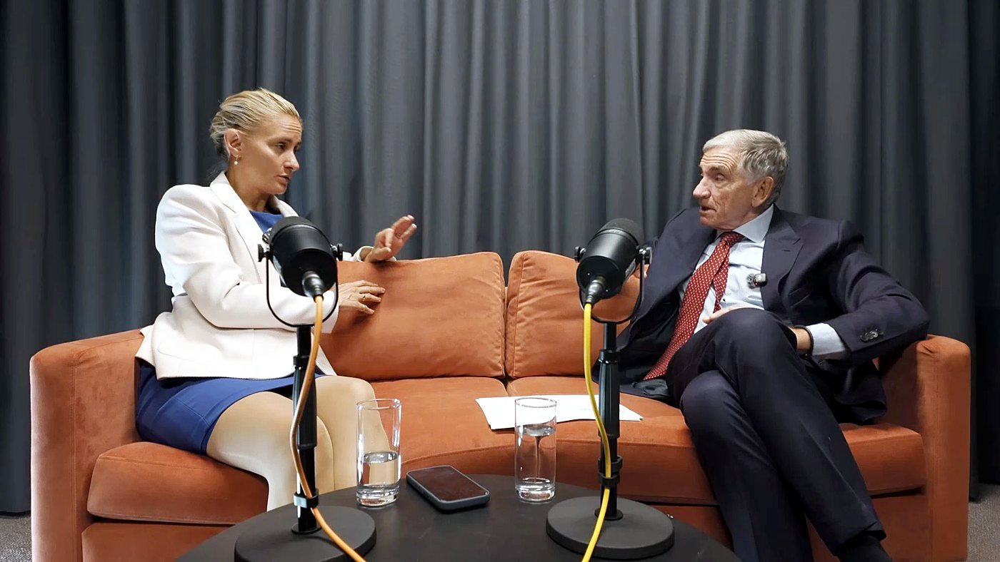

Cancer Treatment and Heart Health: What Patients Need to Know

Some cancer treatments can affect the heart during treatment, or even years later. In Episode 13 of The Dokkcast, Dr Nara Daubeney speaks with Dr Alexander Lyon, consultant cardiologist at the Royal Brompton Hospital, about the rapidly developing field of cardio-oncology.
In this episode
They explore how chemotherapy, targeted therapies, hormone treatments, radiotherapy and immunotherapy can affect cardiovascular health, and how personalised risk assessments are helping patients receive effective cancer treatment more safely.
Dr Lyon also explains the warning signs, the value of monitoring, and why exercise, diet and other healthy choices can make a meaningful difference.
The episode offers practical guidance for anyone going through cancer treatment, cancer survivors, and those supporting a loved one through treatment.
Topics covered
- Protecting the heart during cancer treatment
- What heart failure is
- Balancing cancer treatment with cardiac risk
- Chemotherapy and long-term heart damage
- Targeted therapies, blood pressure and heart health
- Hormone therapies for breast and prostate cancer
- Radiotherapy and its long-term effects on the heart
- Assessing personal cardiovascular risk
- Exercise, diet and healthier cancer outcomes
- Immunotherapy, and "reverse cardio-oncology": can heart disease drive cancer?
About our guest
Dr Alexander Lyon is a consultant cardiologist and clinical lead for the cardio-oncology service at Royal Brompton Hospital. You can read his specialist profile on the Royal Brompton website.
Chapters
- 00:00 Introducing Dr Alexander Lyon and cardio-oncology
- 04:18 Protecting the heart during cancer treatment
- 08:49 What is heart failure?
- 12:30 Balancing cancer treatment with cardiac risk
- 15:31 Why cancer drugs can affect the heart
- 18:29 The growing cardiovascular impact of cancer medicines
- 21:14 Chemotherapy and long-term heart damage
- 25:06 Targeted therapies, blood pressure and heart health
- 31:15 Hormone therapies for breast and prostate cancer
- 35:29 Radiotherapy and its long-term effects on the heart
- 39:58 Assessing personal cardiovascular risk
- 41:46 Exercise, diet and healthier cancer outcomes
- 45:02 Making specialist cardio-oncology care widely available
- 49:58 Guidelines, technology and the Onco Card
- 53:49 The future of cancer immunotherapy
- 58:08 Reverse cardio-oncology: can heart disease drive cancer?
- 01:01:38 Practical advice for patients and cancer survivors
Listen and follow
Episode 13 was released on 23 September 2026. Listen on Spotify above, or find The Dokkcast on Apple Podcasts, YouTube Music and Acast. Find out more about Udokk and The Dokkcast at udokk.com.
The Dokkcast provides general information and education only and does not replace individual medical advice, diagnosis or treatment. If you are having cancer treatment, speak to your own care team about your heart health.
This article is for general information and education only. It does not replace individual medical advice, diagnosis or treatment. Always consult an appropriately qualified healthcare professional about concerns relating to your health.
Listen to The Dokkcast
Evidence-led conversations with eminent doctors, clinicians, researchers and healthcare specialists, hosted by Dr Nara Daubeney.